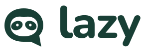
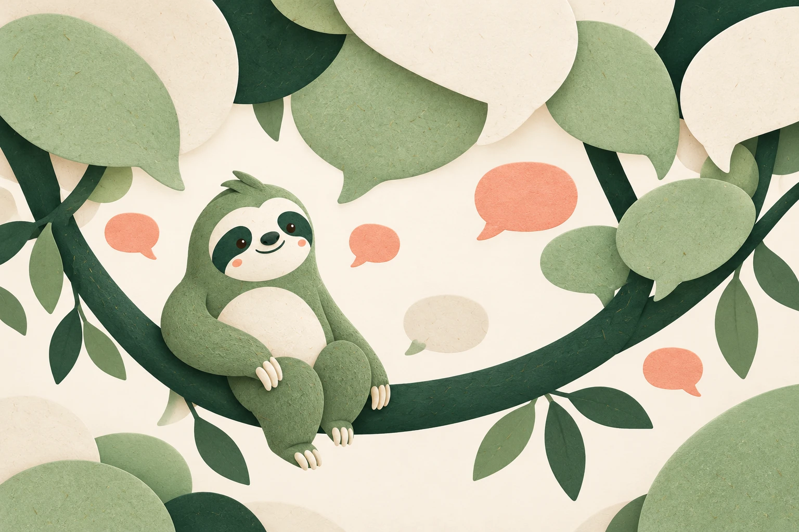
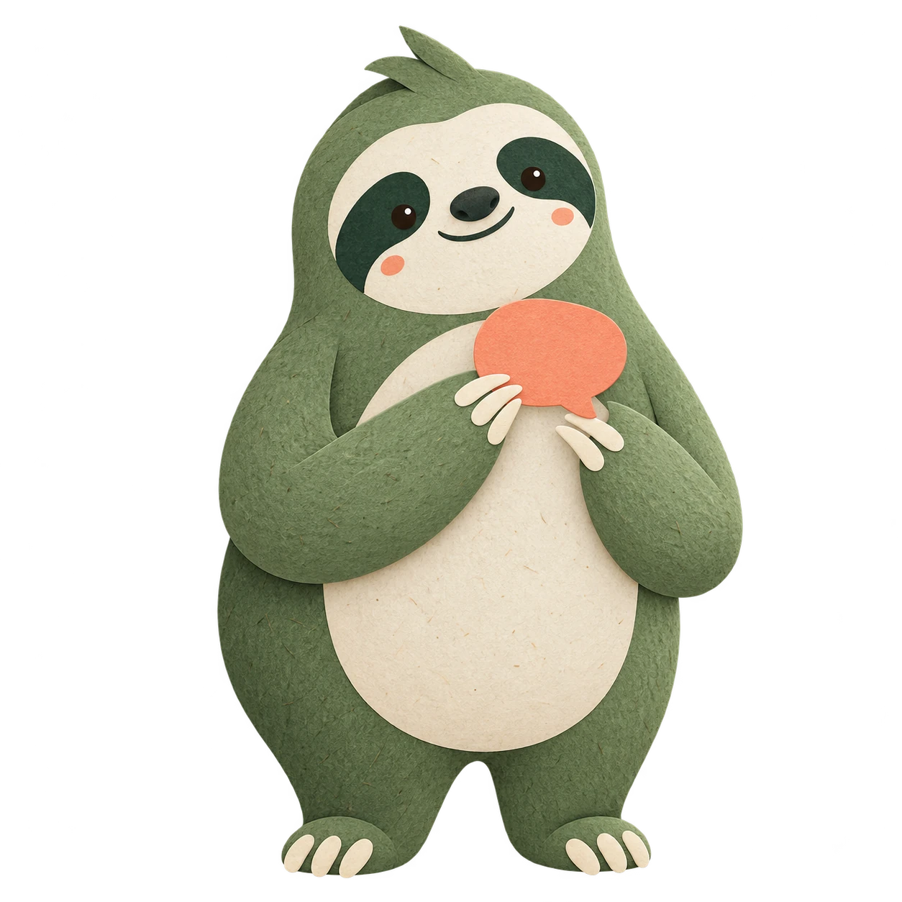

Soft Signal
Gentle · welcoming · grounded

A little less noise. A lot more human.


#183F35#F5F1E7#A9C3A0#E9A38DDM Sans / Body & interface
Display 600–800 · Body 400 · UI 600
Good work.
Easy conversation.
A native place for channels, messages and the people you work with.
Best overall fit for the name and a calm, approachable chat product.
LAZY / BRAND EXPLORATIONS / 2026Why this direction
Warm, tactile and quietly friendly. The closest fit to the name Lazy: an easy place to talk, with a competent sloth as its companion.
Best for: Teams that want everyday work to feel more human.
Logo & illustration
A sloth face tucked into a rounded speech bubble. The low, curved eye patches connect the name to relaxed attention; the tail keeps the chat category clear.
Layered cut paper, organic silhouettes and subtle fiber texture. Keep texture in illustrations; keep interface surfaces clean.
Mascot role
An awake, reassuring sloth with a sage body, a cream face and a coral chat bubble. Moss welcomes people, explains empty states and celebrates small wins.
Design consideration: Keep Moss awake and the product copy direct so warmth does not suggest slow software.
Verified text contrast
- Body on background 10.34:1
- Secondary text on background 5.56:1
- Primary button label 10.34:1
- Accent label 5.6:1
- Dark mode body 13.29:1
- Dark mode secondary text 9.03:1
- Dark mode primary button label 7.85:1
Each listed pair clears WCAG AA’s 4.5:1 threshold for normal text. Decorative colors are not interchangeable with text tokens.
Reusable assets
Logo SVG · Symbol SVG · Mascot PNG · Illustration PNG · CSS tokens


Also included: reverse and monochrome wordmarks, a monochrome symbol, SVG favicon, PNG originals, WebP exports, self-hosted WOFF2 fonts, font licenses and light/dark CSS tokens.